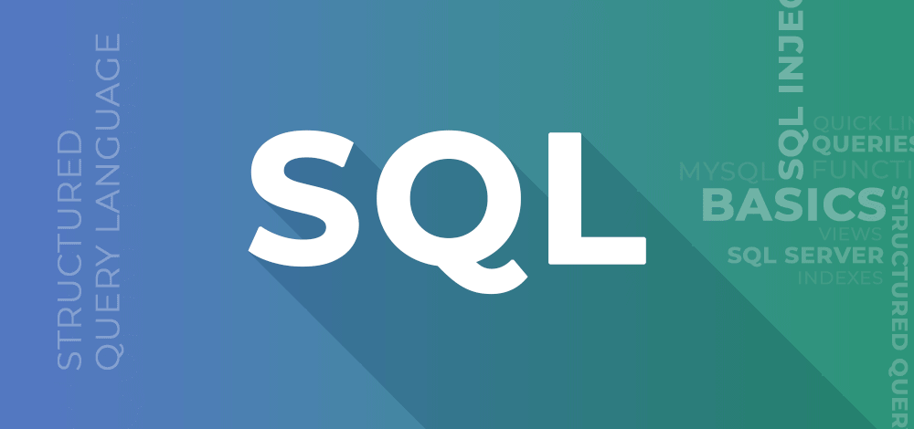

tecnologias front-end:
empeze a investigar el mundo desarrollo web a los 14 años empeze a interesarme en el mundo tecnologico de ahi con curiosidad de querer seguir investigando sobre distintos tema como desarrollo de videojuegos,blockchain,app,inteligencia artificial etc ya a los 15 años empeze con cosas mas tecnicas pero tampoco tan avanzadas como python y a los 16 años sql a los 17 años ya me empezo a interesar mas la ciberseguridad empeze a investigar y vi que habian varios sectores en el mundo de la seguridad informatica pero los dos mas destacados eran red team y blue team que seria el lado del hacker etico que seria analisar vulnerabilidades simular ataquen y reportarla en pocas palabras y el lado de blue team protege los sistemas y redes de una organización utilizando técnicas como monitoreo de seguridad, análisis de registros (logs), detección de intrusiones, gestión de parches.
los principales distribuciones/sistemas operativos que se usan en la ciberseguridad son kali-linx y parrot. despues ahi otras distribuciones que no estan tan orientadas a la ciberseguridad pero si mas al desarrollo o uso cotidiano normal de las personas como ubuntu y linux-mint entre otros.